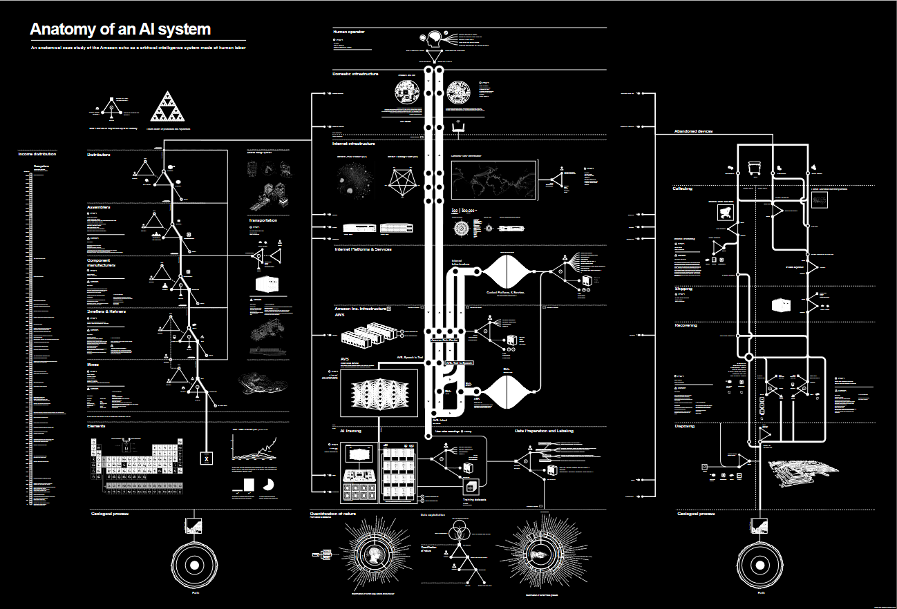

"...both the technical and the human processes that affect what information is captured in the data collection process and how the data are then structured."
Data Feminism, p. 132
A complex socio-technical system that is composed of many apparatuses and elements that are thoroughly entwined and whose central concern is the production, management, analysis, and translation of data
Kitchin, 2014, p. 24
A more succinct summary:
All of the technological, political, social, and economic apparatuses that frame the nature, operation, and work of a data system or infrastructure
Kitchin & Lauriault, 2018, p. 8
Hall & Dávila, 2022, Chapter 3
What are some "technological, political, social, and economic apparatuses that frame the nature, operation, and work" of the U.S. Census?
Crawford & Joler's Anatomy of an AI System:
